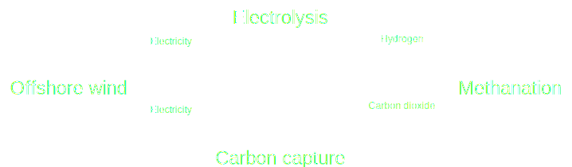

<!DOCTYPE html>
<html lang="en">
  <head>
    <meta charset="utf-8" />
    <meta name="viewport" content="width=device-width, initial-scale=1.0, maximum-scale=1.0, user-scalable=no" />

    <title>Syngas - an opportunity to reduce carbon emissions</title>
    <link rel="shortcut icon" href="./../favicon.ico"/>
    <link rel="stylesheet" href="./../dist/reveal.css" />
    <link rel="stylesheet" href="./../dist/theme/black.css" id="theme" />
    <link rel="stylesheet" href="./../css/highlight/github.css" />

  </head>
  <body>
    <div class="reveal">
      <div class="slides"><section  data-markdown><script type="text/template">

# Syngas - an opportunity to reduce carbon emissions

<br>

Niels A. Wouda

01-12-2021
</script></section><section ><section data-markdown><script type="text/template">
## Motivation


<!---  --->

- In NL, about 45% of total energy production is based on natural gas [3]
- Pollutes carbon dioxide
</script></section><section data-markdown><script type="text/template">
## Motivation

- Syngas has 'simple' chemistry:
    - **Electrolysis**: water + electricity $\longrightarrow$ hydrogen
    - **Carbon capture**: exhaust fumes + electricity $\longrightarrow$ carbon dioxide
    - **Methanation**: hydrogen + carbon dioxide $\longrightarrow$ syngas
- Syngas is **carbon-neutral** when renewable electricity is used


<!---  --->
</script></section><section data-markdown><script type="text/template">
## Motivation

- Methanation and carbon capture are very expensive
- But so were (offshore) wind and solar just a decade ago: [1]


<!---  --->

<div style="font-size: .75em;">
    (Electrolysis cost has gone down by ~40% in past five years [2])
</div>
</script></section><section data-markdown><script type="text/template">
## Motivation

- Syngas today is more expensive than natural gas
  - But how much more expensive?
  - What drives costs?
- What carbon tax would make syngas production cost-competitive?
</script></section></section><section  data-markdown><script type="text/template">
## Solution approach

- Designing a syngas production network at minimal cost:
  - gives estimate of syngas production cost;
  - yields relative costs of all parts of the network;
  - can be used to determine a cost-competitive carbon tax.
- Has many **policy implications**!

<br>

So, what I work on is:
> How to construct a minimum-cost network for syngas production using captured carbon dioxide and renewable electricity?
</script></section><section  data-markdown><script type="text/template">
## Conclusion

- Syngas is great in theory, expensive in practice
- I want to find out what drives the cost of syngas production
- What is needed to make syngas cost-competitive?
</script></section><section  data-markdown><script type="text/template">
## References

1. Adapted from Figure ES.3 of 
   IRENA (2021), 
   _Renewable Power Generation Costs in 2020_, 
   International Renewable Energy Agency.
   https://irena.org/publications/2021/Jun/Renewable-Power-Costs-in-2020

2. G. Glenk and S. Reichelstein (2019), 
   Economics of converting renewable power to hydrogen,
   _Nature Energy_ 4, 216–222. https://doi.org/10.1038/s41560-019-0326-1

3. CBS (2021), _Energiebalans; aanbod, omzetting en verbruik_, 
   https://www.cbs.nl/nl-nl/cijfers/detail/83140NED.
</script></section></div>
    </div>

    <script src="./../dist/reveal.js"></script>

    <script src="./../plugin/markdown/markdown.js"></script>
    <script src="./../plugin/highlight/highlight.js"></script>
    <script src="./../plugin/zoom/zoom.js"></script>
    <script src="./../plugin/notes/notes.js"></script>
    <script src="./../plugin/math/math.js"></script>
    <script>
      function extend() {
        var target = {};
        for (var i = 0; i < arguments.length; i++) {
          var source = arguments[i];
          for (var key in source) {
            if (source.hasOwnProperty(key)) {
              target[key] = source[key];
            }
          }
        }
        return target;
      }

      // default options to init reveal.js
      var defaultOptions = {
        controls: true,
        progress: true,
        history: true,
        center: true,
        transition: 'default', // none/fade/slide/convex/concave/zoom
        plugins: [
          RevealMarkdown,
          RevealHighlight,
          RevealZoom,
          RevealNotes,
          RevealMath
        ]
      };

      // options from URL query string
      var queryOptions = Reveal().getQueryHash() || {};

      var options = extend(defaultOptions, {"width":1600,"height":1050,"transition":"slide","slideNumber":"c","chalkboard":{"grid":false,"theme":"whiteboard","toggleChalkboardButton":false,"toggleNotesButton":false},"menu":{"numbers":"c","markers":false,"hideMissingTitles":true},"math":{"TeX":{"jax":["input/TeX","output/SVG"]}}}, queryOptions);
    </script>

    <script src="./../_assets/plugin/chalkboard/plugin.js"></script>
    <script src="./../_assets/plugin/menu/menu.js"></script>
    <script src="./../_assets/plugin/plugin.js"></script>

    <script>
      Reveal.initialize(options);
    </script>
  </body>
</html>
